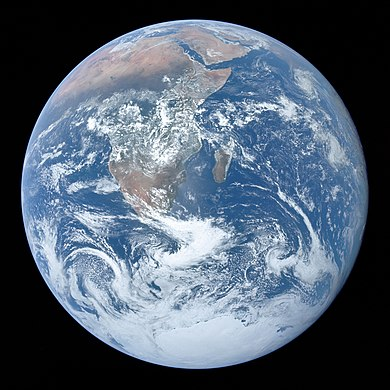

The Earth is a vibrant and dynamic planet, enveloped in a delicate balance of atmospheric layers that contribute to its unique and diverse environment. The atmosphere, a mixture of gases predominantly composed of nitrogen and oxygen, surrounds the planet like a protective blanket. It extends from the surface upward, gradually thinning as it reaches into space. At ground level, the atmosphere plays a crucial role in sustaining life. It provides the air we breathe, a combination of essential gases that support the respiration of plants, animals, and humans alike. The atmosphere also acts as a shield, protecting the Earth's surface from the harmful effects of the sun's ultraviolet radiation. The atmosphere is not static; rather, it is in constant motion.
Winds, driven by the uneven heating of the Earth's surface, circulate through the atmosphere, shaping weather patterns and distributing heat around the globe. These movements, combined with the water cycle, create a dynamic system that governs climate and weather events. Above our heads, the sky showcases a spectrum of colors, from the blue hues of the daytime sky to the fiery reds and purples of a sunset. Clouds, formed through the condensation of water vapor, add texture and drama to the atmospheric canvas. The changing patterns of clouds and the rhythmic rise and fall of temperatures contribute to the ever-shifting spectacle of weather. As night falls, the atmosphere reveals another dimension of its beauty.
The stars emerge, scattered across the cosmic expanse, and the moon casts its gentle glow. In this celestial dance, the atmosphere continues to play a role, influencing the clarity and visibility of the night sky. In summary, the atmosphere of Earth is a dynamic and essential component of our planet, fostering life, shaping climate, and providing a canvas for the breathtaking displays of nature. Its delicate balance is a testament to the interconnectedness of the Earth's systems and the beauty of the natural world.